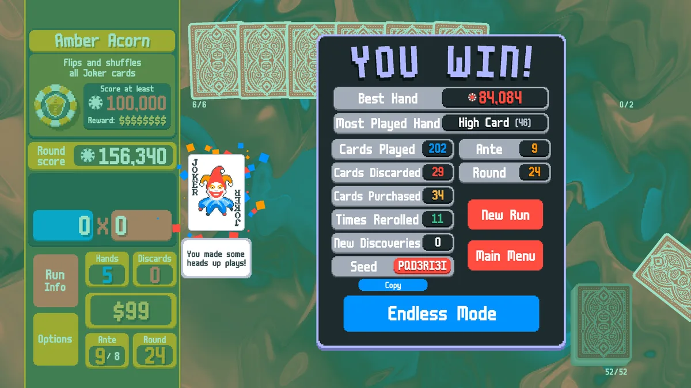

Training a Balatro agent that works in the real game
I built a seed-faithful Balatro simulator in Rust, trained a 1.1M-parameter transformer with PPO, and checked every live action against the simulator before calling the project finished.
I started this project with a stricter goal than “make an agent win in a simulator.” I wanted the same policy to control my copy of Balatro, while the simulator predicted the real game state after every decision. That made environment fidelity the central engineering problem, not a cleanup task at the end.
The final policy wins 71.0% of complete Red Deck runs on White Stake across roughly 8,000 held-out seeds. Four late checkpoints all scored between 70.7% and 71.1%, which gave me confidence that the result was stable. I then connected the certified checkpoint to the real game: it won a full run in 223 actions, while the lockstep validator found no unexplained state differences.
Why Balatro is a difficult RL environment
Balatro, created by LocalThunk, is a roguelike deckbuilder built around poker hands. A standard run lasts eight antes. Each ante contains a Small Blind, a Big Blind, and a Boss Blind, and every blind sets a score that must be reached with a limited number of hands and discards. Beating the ante-8 Boss Blind wins the run.
The poker hands are only the foundation. Between blinds, the player buys jokers, consumables, vouchers, and booster packs; changes cards in the deck; upgrades hand types; and decides whether to spend money or preserve it for interest. Jokers can add chips, add mult, multiply mult, retrigger cards, or change the value of later decisions. Boss Blinds introduce exceptions of their own, and skipping a blind trades an immediate reward for a tag that may pay off later.
For an agent, this creates three linked problems. The final win signal may be hundreds of decisions away. Shop inventory and card draws depend on seeded random streams. The action space also changes with the state: playing or discarding requires choosing a variable-size subset of cards, while shops add buying, selling, rerolling, opening packs, and using consumables. Training directly through the animated game would be far too slow, so I needed a faster environment that still behaved like Balatro.
Scoring, scaling, and seeded randomness
Every hand ends with the same basic calculation: final chips multiplied by final mult. The chosen poker hand supplies the starting values, scoring cards add chips, and jokers and card effects modify either side as the scoring pipeline runs. A level-1 Flush, for example, begins at 35 chips and 4 mult:
Playing K♥ Q♥ 9♥ 6♥ 3♥ adds 38 card chips to the Flush's base 35, producing 73 × 4 = 292 before other effects. A +4 mult joker followed by a ×1.5 mult joker raises that example to 73 × 8 × 1.5 = 876. The actual simulator preserves Balatro's full effect order, including enhancements, editions, retriggers, and per-joker state.
The challenge is that the required score rises much faster than an early build's additive bonuses. By ante 8, a White Stake Boss Blind requires 100,000 chips. Winning consistently means assembling effects that scale together rather than relying on the poker hand alone.
The simulator is possible because Balatro's random choices are reproducible. Given the same run seed and the same sequence of actions, shop rolls, packs, bosses, and card draws come from named pseudorandom streams. Each stream is initialized from its name and the run seed using the game's string hash:
This is Balatro's pseudohash, evaluated from the end of the string. A draw advances its named stream, rounds through a %.13f string conversion, combines the result with the hashed run seed, and seeds LuaJIT's Tausworthe math.random.
I ported that RNG path with the same evaluation order and IEEE-754 operations. Its output is bit-exact against vectors generated by a pinned, game-era LuaJIT build, so the simulator can reproduce the same seeded future instead of merely producing similar randomness.
Building the simulator
The training environment is a from-scratch, headless reimplementation in Rust. It covers the run loop, scoring, shops, packs, consumables, vouchers, tags, Boss Blinds, and all 150 jokers. A PyO3 binding exposes it to Python as a vectorized environment, allowing thousands of runs to advance in parallel without rendering the game.
I treated the implementation as a compatibility project. Ported behaviors include source-location notes, and tests compare RNG, scoring, shop, and joker outputs with oracle vectors generated from a pinned LuaJIT build. The simulator currently has 294 tests. The repository contains the original Rust implementation and generated numeric vectors, but no Balatro code or game assets.
Unit tests were only the first layer. I also built a cross-validation harness around balatrobot, which exposes the real game through a local JSON-RPC API. The harness starts the simulator and Balatro on the same seed, sends each action to both, normalizes documented mod-framework quirks, and compares the complete state after every step. Across more than 1,100 live-verified actions, including all eight antes, it found no unexplained divergence. More importantly, it found mistakes that isolated tests had missed:
- Red Deck starts with four discards per round. I had applied its +1 bonus to the wrong base value, changing every episode used for training.
- Cards return to the front of the deck after a round. Returning them to the back changed later draw order even when the current round looked correct.
- Card debuffs clear as soon as the blind is defeated. My first implementation kept them active until the round transition.
- Mr. Bones saves the run without awarding the blind payout. The simulator originally paid the normal reward after the joker prevented a loss.
The validator also isolated scoring differences caused by the Steamodded beta used to run balatrobot. Those are documented and normalized in the harness rather than copied into the simulator, whose target is the unmodified game's behavior.
Training the policy
The policy sees the game as a set of entities rather than one flat vector. Hand cards, jokers, consumables, shop slots, the current blind, and global run state each receive their own token. A roughly 1.1M-parameter transformer attends across those tokens and selects an action type, then fills in only the parameters that action needs.
Card selection uses an autoregressive pointer head: it chooses one card at a time until it emits STOP. Action masks remove illegal choices before sampling, so the policy cannot buy an unaffordable item, discard with no discards left, or select a nonexistent card. I trained the model with PPO; most of the work was in deciding which states it should learn from and when:
- Ante curriculum. Training began with runs that ended after ante 1, then moved through antes 2, 3, 5, and 8. Promotion required at least a 70% greedy win rate on held-out seeds.
- Snapshot starts. Some episodes began from saved mid-run states so the policy could practice late-game decisions before it could reach them consistently. The restored future was re-randomized, and the snapshot fraction eventually fell to zero so final training used only fresh runs.
- Reward annealing. Early training used denser progress rewards for scoring and clearing blinds. I reduced their weight to β = 0.1 so the later policy was driven mainly by the +15 reward for winning the run.
- Throughput work. bf16 updates over fp32 master weights,
torch.compile, and a GPU-resident rollout buffer raised throughput from about 10,000 environment steps per second on my RTX 4070 to about 48,000 on the rented dual-RTX-5090 machine used for the main run.
The main schedule ran for 4 billion environment steps. A second training seed followed the same curve through 3.71 billion steps, and an in-training A/B test showed that two PPO epochs outperformed four both per step and per hour. For the final evaluation, I ran four checkpoints from 3.92 to 4.00 billion steps greedily over roughly 8,000 held-out seeds each. Their win rates ranged from 70.7% to 71.1%; the certified 4.00-billion-step checkpoint scored 71.0%.
| Evaluation point | Ante-8 win rate |
|---|---|
| Mid-training (about 2.18B steps) | 64.5–68.0% across milestone evaluations |
| Late checkpoints (3.92–4.00B steps) | 70.7–71.1% over ~8,000 held-out seeds each |
| Certified checkpoint (4.00B steps) | 71.0%, greedy policy |
Taking the policy into Balatro
A strong simulator result does not guarantee that a policy will transfer. For the final test, I ran the certified checkpoint through the same bridge used for cross-validation. The policy read the simulator's encoded state, selected an action, and sent it to the real game. Both sides advanced together, and the validator compared their complete states after every action.

The policy used the full decision space: it skipped blinds for tags, chose cards to play and discard, bought and sold items, rerolled shops, and managed its money. Inference was a single forward pass, so the model added negligible delay beside the game's animations.
The run also improved the bridge itself. I found that cashing out during an animation could read a stale dollar value, and that balatrobot's use and sell commands silently did nothing outside specific game phases. I added waits and phase-aware masks for both cases. Neither issue required changing the policy or simulator.
What I took away
The model was the smallest part of the story. The difficult work was building an environment fast enough for billions of steps, precise enough to reproduce seeded runs, and observable enough to explain a mismatch when one appeared. The lockstep validator turned “the simulator seems right” into a claim I could test after every action.
There is still room to push the result: fine-tune a larger policy, add search over simulator futures, and train on harder decks and stakes. Those experiments can now start from a tested simulator, a reproducible training stack, and a policy that has already transferred to the real game.